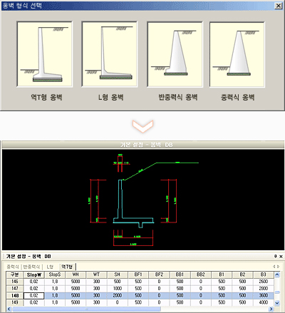

3D geometry and design data
BIM modelling for corrugated steel structures, covering geometry, arrangement and design conditions.

Our in-house BIM links 3D geometry, structural checks, drawings and quantities.
Document languages are shown with each download. PDF files, software screenshots and text within images retain their original language.
CORRA is our in-house BIM design software linking the geometry and engineering data of corrugated structural plate structures. The 3D model, structural checks, drawings and quantity generation form one design workflow.
BIM modelling for corrugated steel structures, covering geometry, arrangement and design conditions.
Structural checks based on geometry, cover depth, loading and ground conditions.
Convert design inputs into general arrangement drawings, plate layouts and quantity schedules.
Geometry, structural and fabrication information in one workflow. CORRA is our in-house BIM software for corrugated structural plate, connecting structural checks to automatic drawing and quantity generation.
Enter the design conditions,
then inspect the geometry and layout in 3D.
Structure and road layout
Box cross-section and buried geometry
Entrance and ancillary structures
BIM connects geometry with information.
Communicate design through 3D models and data, alongside drawings.
Generate drawings and quantities from geometry and design conditions, reducing repeated data entry and keeping review information in one workflow.
Owners, designers and contractors can review geometry, layout and ancillary structures together using the 3D model and drawings.
Show product and method applications together with engineering and fabrication deliverables to support technical proposals and coordination.
Korea’s MOLIT BIM guidelines promote connecting design information through 3D models for use in later project stages. CORRA provides BIM capabilities linking corrugated structural plate design and fabrication data.
Actual CORRA sample outputs.
Select a drawing to enlarge it.
Plan · Longitudinal section · Cross-section
Plate segmentation and arrangement
Box structure: plan · Sections
Entrance geometry · Sections
Sample drawings demonstrating automatic generation. Project-specific design inputs, calculations and drawings require engineer review before use.
Our in-house structural checking software for buried helically corrugated steel pipe. Enter diameter, thickness, loading and cover depth to review individual checks and design-range tables.
Review wall compression and buckling, flexibility factor, minimum cover and deflection for the specified inputs.
Compare minimum cover, maximum fill height and pipe mass by diameter and thickness for the selected corrugation.
Export calculation reports to Word and design-range tables to Excel for technical coordination and deliverables.
Set Korean design conditions such as KL-510 road loading. Railway loads and special conditions are checked against the employer’s criteria.
Supports ASTM A796 / AASHTO-based checks and Taiwan road and railway load settings. Interfaces and reports support Korean and Traditional Chinese.
Explore the interface and sample outputs.
Diameter · Thickness · Cover at a glance
Design basis · Calculations · Check results
Features and screenshots from user manual v1.0.0. Confirm the employer’s criteria and design conditions, and have an engineer review the results before application.
Alongside CORRA, we own software supporting structural, geotechnical and detailed analysis, and ancillary-structure design.
 Software available
Software availableFor analysis and design checks of civil structures, including moving loads and construction stages.
Image source · MIDAS IT official product page ↗ Software available
Software availableAssess ground, buried structures, foundations and construction-stage behaviour.
Image source · MIDAS IT official product page ↗ Software available
Software availableDetailed behaviour and nonlinear analysis of structures and connections.
Image source · MIDAS IT official product page ↗
Software availableFor stability and section checks, drawings, calculations and quantities for retaining walls.
Image source · aroad official product page ↗ Software available
Software availableFor design and deliverables for culverts, wing walls and other ancillary structures.
Image source · aroad official product page ↗Software images are from the respective manufacturers’ product literature.
Contact us about products, design and construction support.